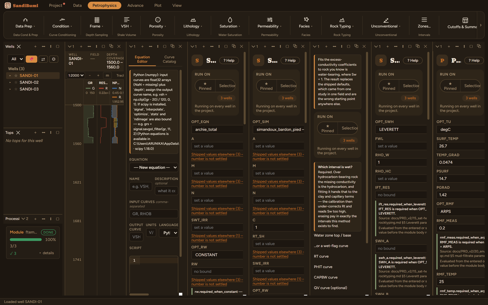

Reservoir-condition inputs for saturation and SandiMin work, from linear trend fits in true vertical depth: formation temperature and pressure, mud-filtrate resistivity at formation temperature, and the QC conductivities CT and CXO.
FTEMP = SURF_TEMP + TEMP_GRAD·TVDSS; FPRESS = PSURF + PGRAD·TVDSS ARPS: RMF@FTEMP = RMF·(T_meas + 6.77)/(FTEMP + 6.77) [temperatures in °F] TREND: RMF@FTEMP = RMF_A + RMF_B·log10(TVDSS) CT = 1000/RT; CXO = 1000/RXO [mmho/m]
Pre-Calculation writes the curves the saturation and SandiMin work will keep asking for: formation temperature (always in °C, whatever unit you entered the trend in — plus FTEMP_F for SandiMin's fluid-property entry), formation pressure, mud-filtrate resistivity Arps-converted to formation temperature, and the QC conductivities CT and CXO.

On these wells: 0 clean · 3 degraded — and the degradation is the module being precise about what it could not do. This delivery carries no RXO curve, so CXO has zero finite samples (1185 rows, all missing) while FTEMP, FPRESS, RMF_FT and CT are complete. A missing input degrades exactly the outputs that need it and says so per well in Processing → details; it never fails the run or invents a flushed-zone conductivity.
Everything below is generated from the same manifest the application builds this module’s pane from — descriptions, defaults, sources, ranges and pre-run checks here are exactly what the running application enforces.
Reservoir-condition inputs for saturation and SandiMin work, from trend fits: formation temperature = SURF_TEMP + TEMP_GRAD*TVDSS and FPRESS = PSURF + PGRAD*TVDSS, both linear in true vertical depth. Gradients — and the TREND fit below — are per depth unit of the TVDSS curve: enter per-metre values (and a metric refit) for metric wells. The shipped 77 degF / 0.026 deg/ft starting values are one study's feet-based fits, attributed to the owner by DEC-077 — refit per basin, and convert before a metric well (SB-ENV-045 records the 66 degC cost of skipping that). SURF_TEMP / TEMP_GRAD / RMF_TEMP are entered in OPT_TU units, but the FTEMP curve is always written in degC (the unit every downstream module assumes); FTEMP_F is the same trend in degF for SandiMin fluid-property entry. RMF at formation temperature comes either from a surface mud-filtrate measurement Arps-converted per sample (ARPS) or from a field regression RMF = RMF_A + RMF_B*log10(TVDSS) already fit at formation temperature (TREND, for wells with no mud data). CT = 1000/RT and CXO = 1000/RXO are QC/plotting conductivities in mmho/m — SandiMin's CT/CXO tool rows read the RESISTIVITY curves directly and convert internally, so do not feed these curves to them. No TVDSS curve → measured DEPTH is used instead (fine for near-vertical wells).
| Role | Description | Resolves to | Required | Notes |
|---|---|---|---|---|
| TVDSS | True vertical depth subsea | TVDSS | no | — |
| RT | Deep resistivity | RES_DEEP | no | — |
| RXO | Flushed-zone resistivity | RXO | no | — |
Whole-well defaults; per-zone values from the Zones pane take precedence inside their zones (except where a parameter is marked one-value-per-well).
Surface temperature (intercept, whole well)
Temperature gradient per TVDSS unit (whole well)
Formation pressure intercept
Pressure gradient per TVDSS unit
Rmf measured at surface (ARPS)
rmf_meas.required_when_arps — RMF_MEAS is required when OPT_RMF = ARPS. Applies when: [object Object].
Rmf measurement temperature (ARPS)
rmf_temp.required_when_arps — RMF_TEMP is required when OPT_RMF = ARPS. Applies when: [object Object].
RMF trend intercept (TREND, ft-based fit)
rmf_a.required_when_trend — RMF_A is required when OPT_RMF = TREND. Applies when: [object Object].
RMF trend slope on log10(TVDSS) (TREND — fit must use the TVDSS curve's depth unit)
rmf_b.required_when_trend — RMF_B is required when OPT_RMF = TREND. Applies when: [object Object].
Temperature unit for entered params
degFdegCdegFRMF source
ARPSTRENDARPS| Name | Description |
|---|---|
| FTEMP | Formation temperature (always degC) |
| FTEMP_F | Formation temperature in degF (SandiMin fluid entry) |
| FPRESS | Formation pressure |
| RMF | Mud filtrate resistivity at FTEMP |
| CT | Deep conductivity 1000/RT (QC/plotting) |
| CXO | Flushed conductivity 1000/RXO (QC/plotting) |